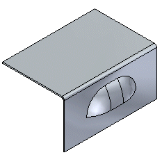
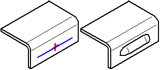

Louver command
Louver command
Constructs a louver with lanced or formed ends.

In the ordered environment, the profile for a louver feature must be a single linear element. Louvers cannot be flattened.

Louver commandConstructs a louver with lanced or formed ends.

In the ordered environment, the profile for a louver feature must be a single linear element. Louvers cannot be flattened.
